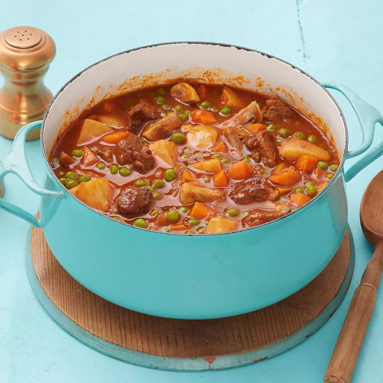

Beef and Vegetable Stew (üçõ)
Back Home

Description:
This hearty beef and vegetable stew is so flavorsome and easy to prep. If you need to feed a crowd, try serving over noodles.
Ingredient Lists:
- 1 tablespoon vegetable oil
- 1 pound cubed beef stew meat, trimmed
- 1 onion, thinly sliced
- 1 (6 ounce) can tomato paste
- (14.5 ounce) can low fat, low sodium beef broth
- 3 potatoes, cubed
- 1 cup chopped carrots
- 1 teaspoon dried thyme
- ¼ teaspoon crushed red pepper flakes
- 1 sprig fresh rosemary
- 1 bay leaf
- 10 ounces button mushrooms, quartered
- 1 (10 ounce) package frozen green peas, thawed
Directions:
- Step 1: Heat oil in a large pot over medium-high heat. Add beef and cook until browned on all sides, about 10 minutes; remove meat and set aside.
- Step 2: Add onion and tomato paste to the same pot; cook and stir until onion is tender, about 5 minutes. Return beef to the pot; stir in beef broth. Reduce heat to low, cover, and simmer until meat is tender, about 1 to 1 1/2 hours.
- Step 3: Add potatoes, carrots, thyme, crushed red pepper flakes, rosemary, and bay leaf; simmer, covered, for 45 minutes, adding some water if stew gets too thick.
- Step 4: Add mushrooms and peas; cook and stir until heated through, about 10 to 15 minutes. Remove rosemary sprig and bay leaf before serving.